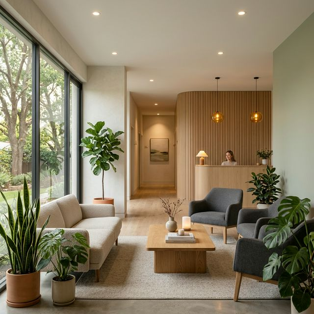

RWD 思考框架：
從物理空間到自適應。
5 坪 vs. 100 坪的比喻
在大螢幕（100坪）我們講求佈局的大氣；在手機（5坪）我們講求資訊的精煉。
DESKTOP
寬廣、大氣留白MOBILE
緊湊、垂直堆疊// Media Query 基本語法
.container {
flex-direction: column;
padding: 1rem;
}
}
斷點 (Breakpoints) 的世界觀。
所謂的斷點，就是設計師決定的「關鍵寬度」。當瀏覽器跨過這條線，網頁排版就會發生翻天覆地的變化。
小螢幕 (手機)
大於 640px 時啟動。通常用於將內容從單欄轉為兩欄。
中螢幕 (平板)
大於 768px 時啟動。這是大多數 Navigation 從漢堡選單轉為展開選單的時間點。
大螢幕 (電腦)
大於 1024px 時啟動。這時網頁可以擁有豐富的三欄或四欄排版。
超大螢幕 (4K)
大於 1280px 時啟動。我們會限制網頁最大寬度 (Max-width)，避免文字長度太長難以閱讀。
組件模式與排版邏輯
風格
的對撞。
點擊風格預覽
實務重構展示：SoulSync

重新定義
療癒與平衡。
在繽紛的校園中為你尋找平靜。國北教大的專業心健陪伴，為你每一次的情緒轉折提供最溫柔的解答。
個別心理諮商
專業心理師全程引導，在高度隱私的專屬空間中，與自我對話，找回初心。
團體工作坊
本堂重點：RWD 實作重點卡片
1. 間距的一致性
在圖片紅框指出的 Padding 不一致問題，解決關鍵在於統一使用 max-w-7xl px-4 md:px-12 作為基礎。
2. 手機版內容簡化
如圖記指出，瑣碎資訊應在手機版「扁平化」。我們使用 hidden md:block 來對付臃腫的內容。
3. 欄位數量的切換
手機版 1 欄，平板 2 欄，桌機 4 欄。這是現代 UI 的基礎律動。
4. 漢堡選單互動
使用 jQuery 控制功能選單的 toggleClass('active')，是實作行動版 UI 的必經之路。
Final Challenge
試著運用我們學到的 **Neo-Brutalism** 風格，在 SoulSync 重構區塊底下，增加一個具備巨大黑邊框與鮮豔綠色背景的特殊預約卡片，並設定其在手機版為 100% 寬度！